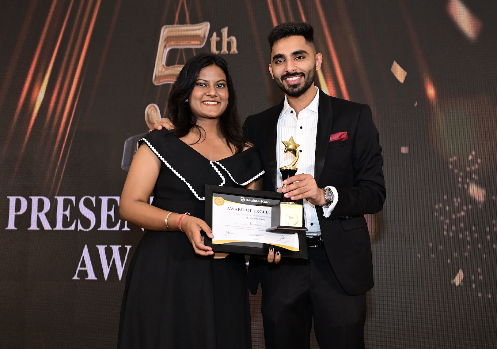

Frontend
Core technologies for creating responsive web interfaces.
QA ENGINEER / FRONTEND DEVELOPER
Building with care. Testing with curiosity.
Explore selected workHi, I’m Unnati. I work as a QA Analyst at RegisterKaro, where I test websites and apps to find bugs and improve how they work. Basically improving the user experience.
I’m someone who constantly comes up with new ideas, thinks out of the box and loves finding solutions for everything. I have good taste in UI, whatever I build I keep in mind UI & UX both.
I work in a fast-paced Start-up. This means I am some or the other time involved in a task I never thought comes under my scope. So, I have the experience of handling new, crazy things with extreme deadline as well. I have even survived 10Am to 6AM and then again showed up at 12noon
I know how to get work done from Claude. I am good with AIs.I bring a careful eye to testing and a hands-on approach to building interfaces, helping turn ideas into thoughtful products that work well for people.
Let’s make something matter ↗I approach business problems with a product-first and evidence-first mindset: define the decision, structure the data, and align stakeholders around practical execution. My work style combines analytical rigor with clarity in communication, helping teams move from discussion to direction.
I own functional, regression and user acceptance testing before each production release. I turn requirements into test scenarios and test cases, log and track bugs in Jira until they close, and validate fixes before they ship. I test REST APIs in Postman, checking JSON payloads, status codes and error scenarios, and I use Chrome DevTools and application logs to find root causes and give developers precise, reproducible reports.
Owning the product and the production. I am the most responsible person here, becasue if anything breaks its on me:)
Award
Recognised with the "Quality Titan" title at RegisterKaro’s 5th Anniversary celebration for my contribution to product quality and reliability.
There's a little more to this award than meets the eye! The announcement took an unexpected turn, and let's just say the story behind how I received this award is quite something. I've shared the whole incident in my vlog.
Read the full story ↗
Download my resume for a closer look at my experience, skills, and work.
Click on Download RESUME to enable the download.
A mix of tools I use to build interfaces, check quality, and work with data.
Core technologies for creating responsive web interfaces.
Testing and collaboration tools for dependable product experiences.
Working with data through scripting and relational queries.
A personal journal about the work, people, lessons, and unexpected moments that shape my first year at work.